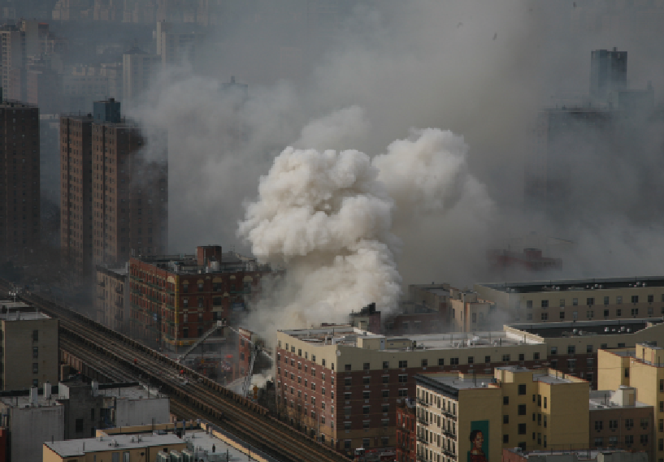

Natural Disasters
These are catastrophic events caused by natural processes of the Earth, such as earthquakes, hurricanes, floods, and volcanic eruptions. They often result in widespread destruction and loss of life.

Man-made Disasters
These disasters are caused by human activities, such as industrial accidents, deforestation, wars, or pollution. They often stem from negligence, mismanagement, or intentional harm.